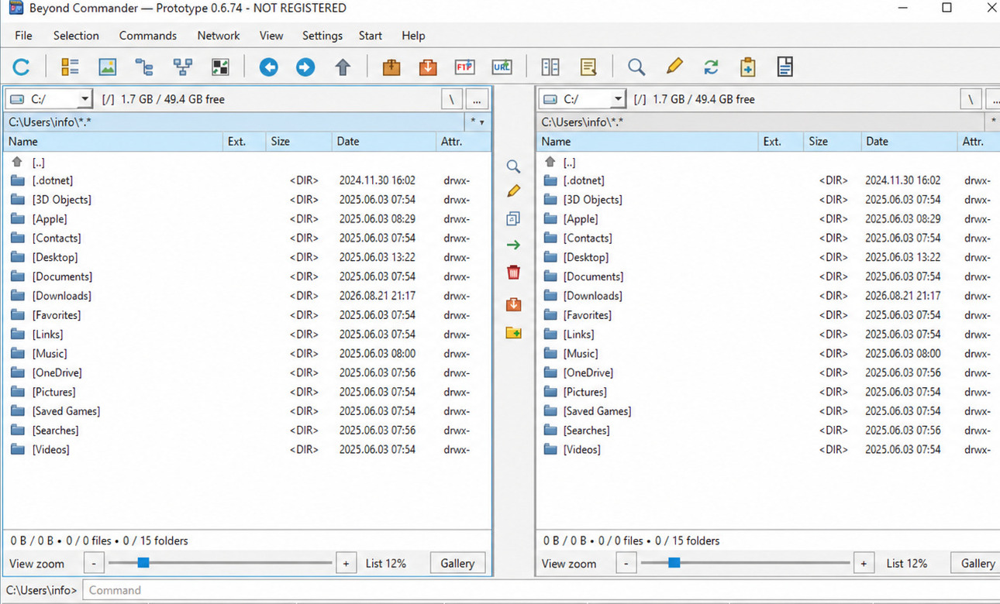

Plugins
Compatibility refers to the plugin binary/API itself, not to whether a Beyond Commander build for that platform has already been released.

Commander plug-in compatibilityReal Beyond Commander interface
WCXArchives
WFXFile systems
WLXViewer
WDXContent
| Plugin family | Purpose | Windows | macOS | Android | Linux | Catalogue / source |
|---|---|---|---|---|---|---|
| WCX | Packer / archive plugins | ✓ Native ABI | △ Port/build dependent | △ Port/build dependent | △ PE/Wine bridge needed | Official catalogue ↗ |
| WFX | File-system plugins | ✓ Native ABI | △ Port/build dependent | △ Port/build dependent | △ PE/Wine bridge needed | Official catalogue ↗ |
| WLX | Lister / viewer plugins | ✓ Native ABI | △ Port/build dependent | △ Port/build dependent | △ PE/Wine bridge needed | Official catalogue ↗ |
| WDX | Content / metadata plugins | ✓ Native ABI | △ Port/build dependent | △ Port/build dependent | △ PE/Wine bridge needed | Official catalogue ↗ |
Native plugins compiled for the host platform can be loaded directly. Windows PE Total Commander plugins on Linux require the PE/Wine bridge and must not be presented as native Linux plugins.
WCL modules
This block is ready for direct links to Beyond Commander/community WCL modules as they are published.
Installers are coming
Planned for all major platforms. Linux packages: AppImage, DEB and RPM. Planned distribution coverage includes Ubuntu, Debian, Linux Mint, Fedora, openSUSE, blackPanther OS and other compatible distributions.
AppImageDEBRPM
3rd-party plugin usage
Windows Active!macOS Coming!🐧 Linux Active!Android Active!